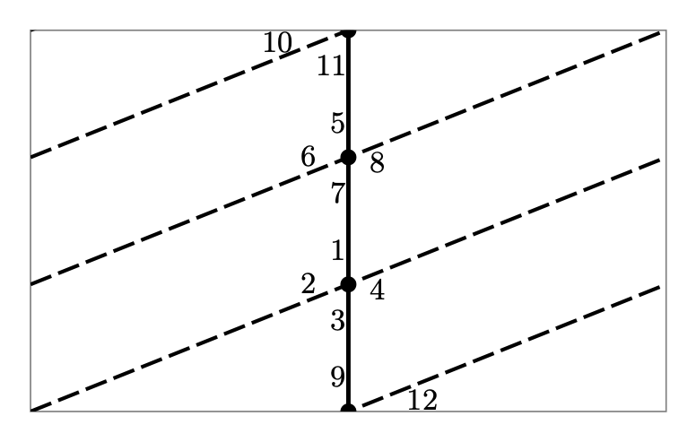
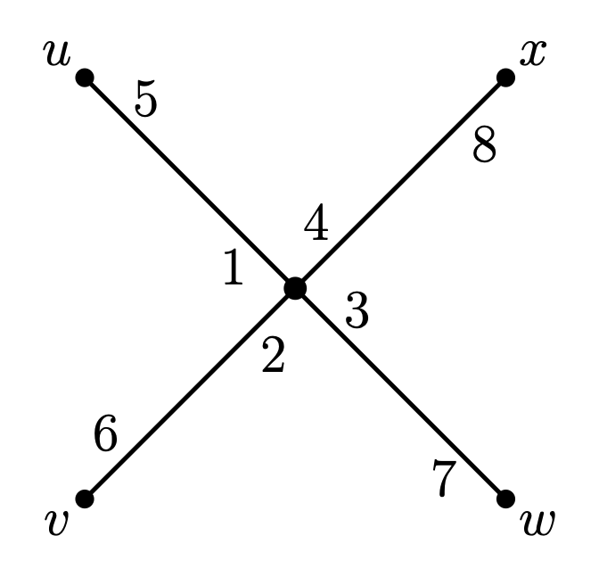
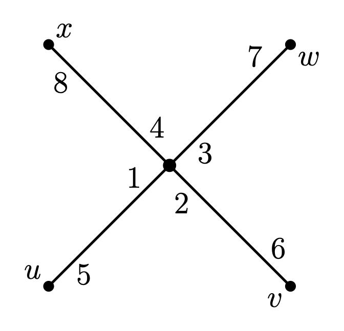
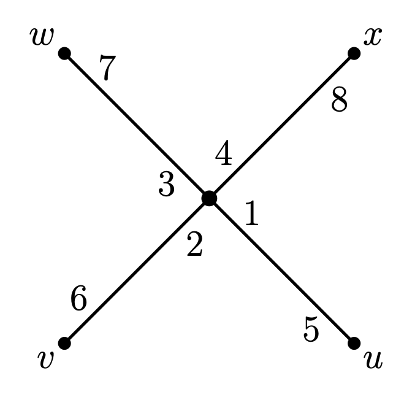
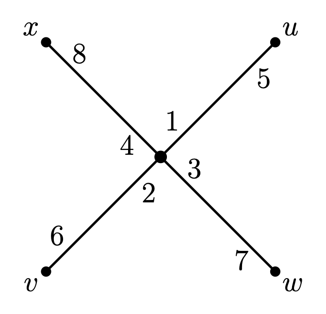

4. Equivalencia
La correspondencia biunívoca entre sistemas de rotación y encajes
Recordamos que dos encajes de grafos \(G_1 \subset S_1\) y \(G_2 \subset S_2\) son equivalentes si existe un homeomorfismo que preserva la orientación \(h: S_1 \to S_2\) tal que \(h(G_1) = G_2\). Esto implica que \(h\) induce un isomorfismo entre los grafos abstractos subyacentes.
Además vimos que la Realización topológica (sección 2) proporciona una función explícita:
\[ \begin{aligned} \text{Mapas Combinatorios} \quad &\rightarrow \quad \text{Ribbon graphs} \\ (D,\sigma, \rho) \quad &\mapsto \quad (G,\iota) \end{aligned} \]
Ahora veamos que la inversa de esta asignación está bien definida, salvo reetiquetado de dardos.
La esquematización de un grafo encajado
Dado un grafo ya encajado en una superficie, se puede “leer” el encaje recorriendo las fronteras de las caras para obtener su mapa combinatorio. Esta es la dirección que se usa para analizar un mapa ya existente.
Para ello, como vimos en la sección 1, se subdivide cada arista del grafo encajado para crear un par de semiaristas (dardos) y se etiquetan. Luego:
- En cada vértice, la orientación de la superficie induce un orden cíclico único de los dardos incidentes. La colección de estos ciclos disjuntos define la permutación
σ(sigma). - Cada arista original corresponde a un par de dardos. La colección de estas parejas (transposiciones) define la permutación
ρ(rho).
El par (σ, ρ) es el mapa combinatorio o esquema asociado al encaje.
Ejemplo
Consideremos el siguiente grafo encajado en el toro.
Después de cortarlo alrededor de un meridiano y una longitud fijas, obtenemos su cuadrado fundamental:

Del diagrama con identificaciones ahora se ve claro que el sistema de rotación asociado es: \[ \begin{aligned} \sigma&=(1234)(5678)(9\,10\,11\,12) \\ \rho &= (1\,7)(2\,8)(3\,9)(4\,10)(5\,11)(6\,12) \end{aligned} \]
Este es un sistema de rotación válido y podemos verificar que en efecto produce un encaje en el toro con el siguiente código mínimo:
Prueba el código directamente aquí (haz clic en “Ejecutar”):
Sin embargo, notar que la asignación del mapa combinatorio no es única, pues podríamos reetiquetar los números y se preserva la misma combinatoria. Por eso imponemos la siguiente clase de equivalencia:
Equivalencia de Sistemas de Rotación
Dos sistemas de rotación \((\sigma_1, \rho_1)\) sobre un conjunto de semiaristas \(D_1\) y \((\sigma_2, \rho_2)\) sobre \(D_2\) son equivalentes (o isomorfos) si existe una biyección \(\tau: D_1 \to D_2\) tal que:
\[ \sigma_2 = \tau \sigma_1 \tau^{-1} \quad \text{y} \quad \rho_2 = \tau \rho_1 \tau^{-1} \]
Esta biyección \(\tau\) preserva toda la estructura combinatoria: mapea vértices a vértices (ciclos de \(\sigma\)) y aristas a aristas (ciclos de \(\rho\)).
El Teorema de Heffter-Edmonds
El Teorema de Heffter-Edmonds es la piedra angular de la teoría de grafos topológicos. No solo establece que todo sistema de rotación genera una superficie, sino que la correspondencia es estructuralmente perfecta: clasifica los encajes salvo equivalencia.
Existe una correspondencia biunívoca entre:
- Clases de equivalencia de sistemas de rotación \((\sigma, \rho)\).
- Clases de equivalencia de encajes celulares de grafos en superficies orientables.
Esto significa que el álgebra de las permutaciones \((\sigma, \rho)\) captura toda la información topológica del encaje, sin pérdida ni ambigüedad.
Importancia Histórica y Práctica
Este resultado transforma problemas topológicos en problemas puramente combinatorios:
- Heffter (1891): Primeros trabajos sobre encajes de grafos en superficies.
- Edmonds (1960): Formulación moderna en términos de permutaciones.
- Ringel (1974): En su libro Map Color Theorem, presenta una demostración constructiva basada en “esquemas”, enfatizando que la rotación induce directamente las fronteras de las caras.
- También conocido como el teorema de representación de superficies
La inyectividad de la correspondencia (unicidad) se demuestra reconstruyendo el sistema de rotación a partir del encaje. Dado un grafo \(G\) encajado celularmente en una superficie orientada \(S\):
- Lectura Local: Para cada vértice \(v\), consideramos un entorno pequeño homeomorfo a un disco. La orientación global de \(S\) induce una orientación en la frontera de este disco (por ejemplo, sentido antihorario).
- Orden Cíclico: Las aristas incidentes a \(v\) cruzan la frontera de este disco en puntos específicos. Al recorrer la frontera en el sentido inducido, leemos la secuencia de aristas. Esto define la permutación \(\sigma_v\) de manera única.
- Invariancia: Si dos encajes son equivalentes, existe un homeomorfismo que preserva la orientación entre las superficies. Este homeomorfismo preserva necesariamente el orden cíclico de las aristas en cada vértice. Por lo tanto, dos encajes equivalentes producen el mismo sistema de rotación (salvo reetiquetado).
Esta construcción demuestra que el sistema de rotación es un invariante completo del encaje.
Ejemplo: Encajes idénticos de un mismo grafo
Consideremos algunos encajes del siguiente árbol.

\( \sigma_1=(1234) \), \( \rho=(15)(26)(37)(48) \)

\( \sigma_2=(1234) \), \( \rho=(15)(26)(37)(48) \)

\( \sigma_3=(4321) \), \( \rho=(15)(26)(37)(48) \)

\( \sigma_4=(1423) \), \( \rho=(15)(26)(37)(48) \)
Podemos verificar que en efecto dan un encaje de género 0:
Prueba el código directamente aquí (haz clic en “Ejecutar”):
Los Sistemas 1 y 2 son idénticos: \(\sigma_1=\sigma_2\) y \(\rho\) es el mismo. La etiqueta “rotado” solo cambia el dibujo, pero no el orden cíclico de los dardos, así que el sistema combinatorio no cambia.
El Sistema 3 tiene \(\sigma_3=(4321)=\sigma_1^{-1}\), que corresponde a un reflejo. En este caso son equivalentes porque existe una biyección de dardos que conjuga uno en el otro y además preserva \(\rho\). Toma \[ \phi=(2\,4)(6\,8). \] Entonces \[ \phi\,\sigma_1\,\phi^{-1}=(1\,4\,3\,2)=\sigma_3, \] y como \(\phi\) solo intercambia las parejas \((2,4)\) y \((6,8)\), se verifica \[ \phi\,\rho\,\phi^{-1}=\rho. \]
Para el Sistema 4 con \(\sigma_4=(1\,4\,2\,3)\), también hay equivalencia con el Sistema 1. Toma \[ \phi=(2\,4\,3)(6\,8\,7). \] Entonces \[ \phi\,\sigma_1\,\phi^{-1}=(1\,4\,2\,3)=\sigma_4, \] y además \(\phi\) preserva \(\rho\) porque solo permuta las parejas \((2,6)\), \((3,7)\), \((4,8)\) entre sí, así que \[ \phi\,\rho\,\phi^{-1}=\rho. \] Por lo tanto, los cuatro sistemas representan el mismo ribbon graph (misma clase de isomorfismo).
En este ejemplo, la equivalencia es relativamente simple de verificar porque el grafo es muy simétrico y tiene pocos vértices. El Teorema de Heffter-Edmonds garantiza que la correspondencia entre sistemas de rotación y encajes es perfecta, pero en casos más complicados, determinar si dos sistemas son equivalentes puede requerir verificación computacional más sofisticada.
Ejercicios

Resumen
- Lectura del encaje: Desde un dibujo encajado se obtiene \((\sigma,\rho)\) leyendo el orden cíclico de dardos en cada vértice.
- Correspondencia fundamental: Sistemas de rotación, ribbon graphs y encajes celulares describen el mismo objeto (Teorema de Heffter‑Edmonds).
- Verificación computacional: Se calculan \(V,E,F,\chi,g\) con SageMath para confirmar el género de ejemplos concretos.
- Equivalencia de sistemas: Dos sistemas \((\sigma_1, \rho_1)\) y \((\sigma_2, \rho_2)\) son equivalentes si existe \(\phi\) tal que \(\phi\sigma_1\phi^{-1}=\sigma_2\) y \(\phi\rho_1\phi^{-1}=\rho_2\).
- Ejemplos simples: Para grafos simétricos como el árbol de 4 hojas, las equivalencias son directas de verificar.
En el siguiente capítulo exploraremos ejemplos más complicados donde la equivalencia no es inmediatamente obvia y requerirá herramientas computacionales más avanzadas.
Publicado el 13 de febrero de 2026